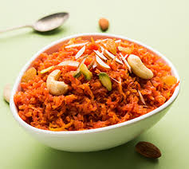

Recipe Book
Theory of Cookery!!!
Fish Fry

Ingredients:
- Fish
- Chilly powder
- Lemon
- Turmeric
- Onions
- Oil
Instructions
- For the Mirsang add all the dry ingredients into a bowl and add vinegar to make a smooth thick paste.
- Transfer paste to an airtight container and store in the refrigerator for up to 2 months.
-
If using your hands to mix, DO NOT touch your fingers to your eyes or any part of your face and wash your hands thoroughly after use.
-
For the fish fry
make slits in the Bangude and apply one to one and a half teaspoon meet mirsang paste all over it. Feel free to use more marinade if you like it extra hot. Push paste in the slits as well and keep aside for 10 minutes.
- Heat oil or ghee in a non stick pan and slide the fish in.
- Pan fry the fish with seven minutes on each side
- Serve hot with onion rings and a dash of lime juice.
Enjoy your delicious Fish fry!
Carrot Halwa|Gajar ka Halwa

Ingredients:
- carrot
- Ghee
- Cashews
- Milk
- Sugar
- Cardamom Powder
Instructions
- First rinse 650 grams carrots (8 to 9 medium-sized tender, juicy carrots or 6 to 7 long carrots) a few times in water.
-
Drain the water. Peel the carrots using a vegetable peeler. Set the peeled carrots aside.
-
Ensure that the carrots are juicy and tender. You could use any variety of carrots (red or orange), but they should be tender.
-
Next, grate the carrots with a box grater or in a food processor. You can measure the grated carrots with a standard measuring cup and you will need about 4 to 4.5 cups of grated carrots.
Grating carrots in a food processor is much easier than grating with a box grater or a hand-held grater.
- In a heavy kadai or wok, add all of the grated carrots.
-
Pour in 4 cups full-fat milk. Switch on the burner.
-
Mix the grated carrots and milk together.
-
Cook this mixture on a low-medium heat. After a few minutes, the milk will begin to froth and then start slowly reducing.
-
Keep stirring this halwa mixture often, scraping the sides of the kadai to remove the evaporated milk solids. Stir the milk solids into the cooking mixture.
-
Keep stirring this halwa mixture often, scraping the sides of the kadai to remove the evaporated milk solids. Stir the milk solids into the cooking mixture.
Add 4 tablespoons ghee (clarified butter). Note that some milk will be there when you add the ghee.
-
10. Mix very well.
-
Next, add 10 to 12 tablespoons sugar, or to taste.
- Add cardamom powder to 6 green cardamom pods powdered finely in a mortar-pestle, or about ½ to 1 teaspoon pre-ground cardamom powder.
-
Mix very well.Simmer till the gajar ka halwa mixture starts to thicken and reduces more. Stir at intervals.
Continue to simmer on a low flame, stirring often.
-
When the halwa has reduced to a pudding-like consistency, add nuts and dry fruits of your choice. I have added 12 cashews, 12 almonds, and 2 tablespoons golden raisins.
Note: Chop the nuts before you add. Raisins can be kept whole. If using saffron, then you can add at this step.
- Simmer till the halwa mixture becomes dry. The milk should evaporate completely and you will see fine milk solids in the mixture. You will also see some ghee being released from the sides.
Remember to scrape the milk solids stuck at the sides of the kadai or pan and add them back to the carrot halwa. Some moisture is also fine in the halwa.
-
Simmer till the halwa mixture becomes dry. The milk should evaporate completely and you will see fine milk solids in the mixture. You will also see some ghee being released from the sides.
Remember to scrape the milk solids stuck at the sides of the kadai or pan and add them back to the carrot halwa. Some moisture is also fine in the halwa.
GOOD FOOD GOOD MOOD!